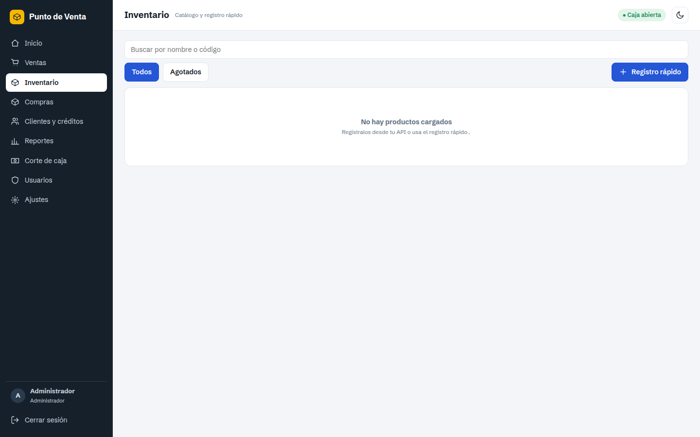
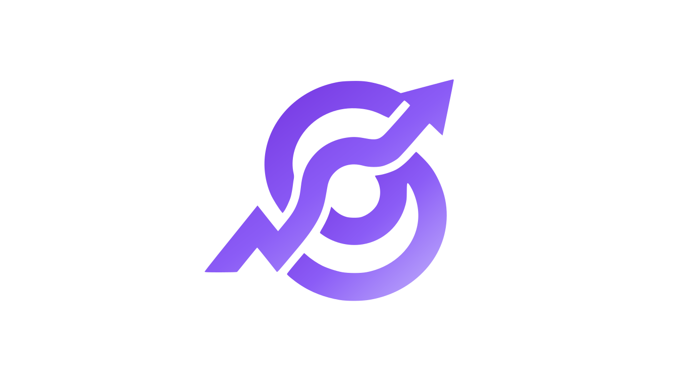
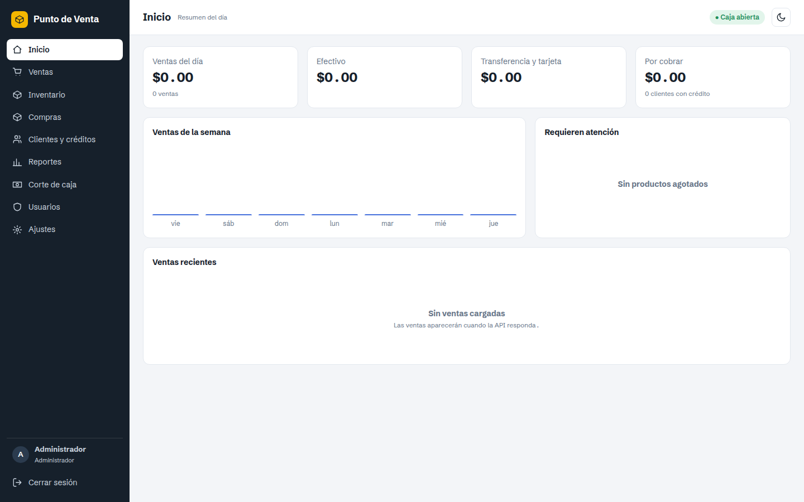
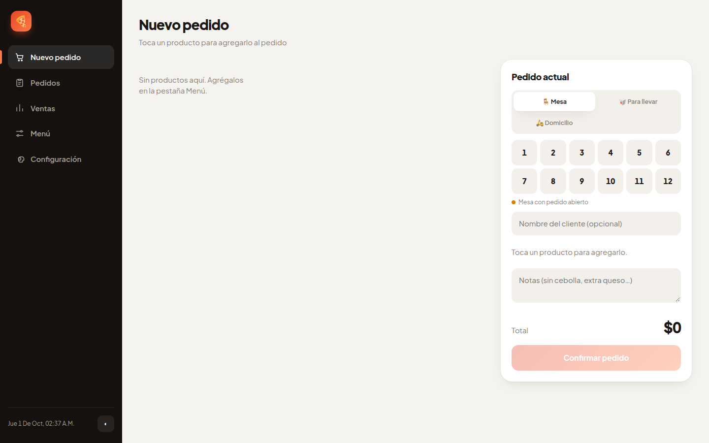

OZZVON POS
Para registrar ventas, llevar inventario, gestionar compras, clientes, créditos y reportes.
Ver funciones ↗
ozzvon. Hablar con Ozzvon ↗Software para la operación real
Dos puntos de venta Ozzvon para resolver tareas concretas: administra productos y ventas en tu comercio, o coordina pedidos y menús en tu restaurante.


● Pantallas reales extraídas de tus softwares · sin mockups
Ozzvon POS y OZZVAN POR no son la misma pantalla con otro nombre. Cada aplicación está organizada alrededor de las tareas que necesita un comercio o un restaurante.

Para registrar ventas, llevar inventario, gestionar compras, clientes, créditos y reportes.
Ver funciones ↗Para trabajar con menús, categorías, productos, mesas, domicilio, para llevar y comandas.
Ver funciones ↗Un punto de venta para administrar la operación comercial desde una sola aplicación.
Busca, agrega y cobra productos. La aplicación contempla efectivo, transferencia, tarjeta, crédito y solicitud de factura desde una venta.
Administra catálogo, códigos y existencias; registra proveedores y entradas de mercancía.
Consulta clientes, saldos, abonos y operaciones pendientes.
Revisa ventas y ganancia bruta; abre caja, registra movimientos y realiza el corte.
La captura conserva la navegación y los estados reales de la aplicación: Inicio, Ventas, Inventario, Compras, Clientes y créditos, Reportes, Corte de caja, Usuarios y Ajustes.
La aplicación muestra su flujo real de pedido con Mesa, Para llevar, Domicilio, selección de mesas, nombre del cliente, notas y total.
Punto de venta para restaurantes con menú organizado y seguimiento del pedido hasta su conclusión.
Trabaja con Mesa, Domicilio y Para llevar; agrega cliente, dirección, teléfono y notas cuando corresponda.
Crea menús, categorías y productos con tamaños y precios, y cambia entre menús guardados.
Consulta pedidos pendientes, en preparación o envío, concluidos y cancelados.
Personaliza las variantes de cocina o venta para cada servicio y genera la comanda sin precios o el comprobante.
La información de esta web sale de tus README, HTML, JavaScript y backends. No agregamos módulos que no estén en tus aplicaciones.
OZZVAN POR usa SQLite local; su base se crea automáticamente y comparte menú y pedidos entre las ventanas conectadas al mismo servidor.
OZZVON POS trabaja mediante API y contempla conexión a base remota, clientes autenticados y sincronización de cambios en tiempo real.
El paquete describe sesión, permisos por rol, cabeceras de seguridad, CORS configurado y recomendaciones para backend remoto con HTTPS.
OZZVON POS está orientado a comercios con ventas, inventario, compras, clientes y caja. OZZVAN POR está orientado a restaurantes con menú, mesas, domicilio, pedidos para llevar y comandas.
Los dos proyectos incluyen lanzadores y configuración para aplicación de escritorio en Windows. OZZVON POS documenta la construcción de un ejecutable con PyInstaller y OZZVAN POR incluye su propio archivo de construcción.
Depende del producto y la configuración. OZZVAN POR usa SQLite local. OZZVON POS está preparado para trabajar con una API y su documentación contempla una base remota; no se deben colocar credenciales de base de datos en el frontend.
Sí. Las imágenes mostradas fueron renderizadas desde los HTML, CSS y JavaScript incluidos en tu archivo WEB.rar. Las etiquetas indican qué aplicación y vista corresponde a cada captura.
Hablemos de tu operación
Cuéntanos qué vendes y cómo trabajas. Te ayudamos a identificar cuál de los dos puntos de venta se ajusta mejor a tu operación.